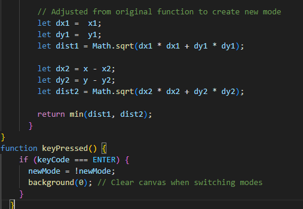

Experiment 2 - Vector Art
Imitate
The code that I started with came from Ahmad Moussa || Gorilla Sun on the website openprocessing
https://openprocessing.org/sketch/1822987Integrate
To extend this code, I added that the center of the drawing would follow the mouse position then I also removed the red square line to give the drawing a more circular feel.

Innovate
To innovate this sketch, I added a new frame rate, increased the number of dots, and changed the wave pattern to sine
After that I then thought it would be pretty creative to add a new drawing mode when "ENTER" was clicked, so now theres two different art modes that can be switch back and fourth
Then finally i added the ability to screen shot the canvas by clicking "S"
Reflection
I contributed to all of the project, with my starting point being from Ahmad Moussa || Gorilla Sun on the website openprocessing. With the staring code I feel that I was able to make something creative and unique enough to call my own. As I look back at my work as a whole I personally feel that I did a good job. I put a lot of thought and effort into not only coding, but also coming up with ideas that seemed fun and exciting. Some breif highs and lows consist of me trying to figure out how to add to a pretty polished peice of work. However once I figured out the direction I wanted to go for this sketch, it was really fun for me to literally watch my ideas come to life as I coded it out.
Results
"ENTER" to switch modes
"S" to take a screenshot